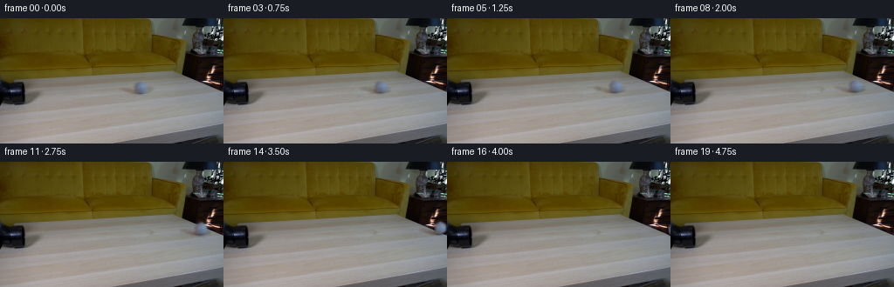
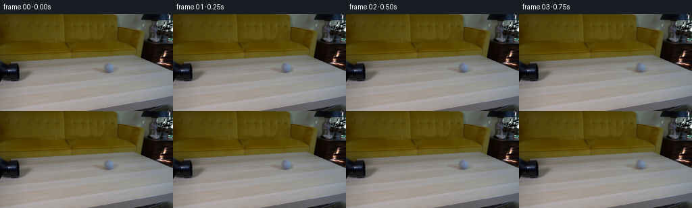
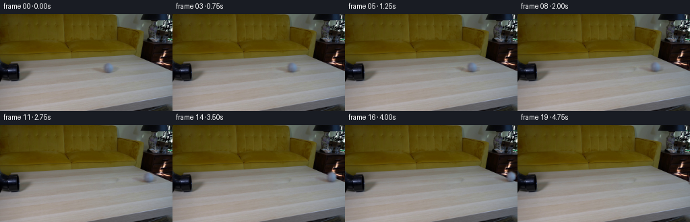

CODING AGENTS AS PIXEL WORLD MODELS
traex/GPT-6.1-Sol · 0022
点击播放 · 原生 RGB 像素
逐轮保存的候选
回放视频、检查图与代码变化。
每份候选均可单独播放。实际图片检查记录在下方工具轨迹中。
候选 01播放与检查图
点击播放 · 原生 RGB 像素


展开代码变化
--- 上一保存版本
+++ 本次保存版本
@@ -0,0 +1,137 @@
+from pathlib import Path
+import numpy as np
+from PIL import Image
+from scipy.ndimage import map_coordinates, gaussian_filter
+from scipy.sparse import lil_matrix
+from scipy.sparse.linalg import spsolve
+import artifact_io
+
+ROOT = Path(__file__).resolve().parent
+H, W = 144, 256
+YY, XX = np.mgrid[:H, :W].astype(float)
+
+
+def clean_table(image):
+ """Reconstruct the small occluded area from this frame's own wood grain."""
+ ball = ((XX - 161.3) / 11.8) ** 2 + ((YY - 79.8) / 10.6) ** 2
+ shadow = ((XX - 147.5) / 22.5) ** 2 + ((YY - 82.7 - .17 * (XX - 147.5)) / 4.5) ** 2
+ q = np.minimum(ball, shadow)
+ mask = q < 1
+ ring = (q >= 1) & (q < 1.6) & (XX > 121) & (XX < 185) & (YY > 68) & (YY < 95)
+ # This part of the same tabletop has continuous, similarly oriented grain.
+ source = np.stack([map_coordinates(image[..., c], [YY + 4, XX - 56],
+ order=1, mode='nearest') for c in range(3)], -1)
+ basis = np.stack([np.ones_like(XX), (XX - 155) / 20, (YY - 80) / 10], -1)
+ fit = np.linalg.lstsq(basis[ring], (image - source)[ring], rcond=None)[0]
+ patch = source + basis @ fit
+ # Harmonic boundary correction leaves the sampled grain intact.
+ difference = image - patch
+ locations = np.argwhere(mask)
+ ids = np.full((H, W), -1, dtype=int)
+ ids[mask] = np.arange(len(locations))
+ matrix = lil_matrix((len(locations), len(locations)))
+ rhs = np.zeros((len(locations), 3))
+ for i, (y, x) in enumerate(locations):
+ matrix[i, i] = 4
+ for v, u in ((y-1, x), (y+1, x), (y, x-1), (y, x+1)):
+ if mask[v, u]:
+ matrix[i, ids[v, u]] = -1
+ else:
+ rhs[i] += difference[v, u]
+ correction = spsolve(matrix.tocsr(), rhs)
+ background = image.copy()
+ background[mask] = patch[mask] + correction
+ return background, mask
+
+
+def warp(a, dx, dy):
+ coords = [YY - dy, XX - dx]
+ if a.ndim == 2:
+ return map_coordinates(a, coords, order=1, mode='constant', cval=0)
+ return np.stack([map_coordinates(a[..., c], coords, order=1,
+ mode='constant', cval=0) for c in range(a.shape[2])], -1)
+
+
+def rolling_details(cx, cy, radius, angle):
+ """Subpixel felt and quiet curved stitching, attached to a rolling sphere."""
+ S = 3
+ ys, xs = np.mgrid[:H*S, :W*S].astype(float)
+ xs = (xs + .5) / S - .5
+ ys = (ys + .5) / S - .5
+ u, v = (xs - cx) / radius, (ys - cy) / radius
+ r2 = u*u + v*v
+ z = np.sqrt(np.maximum(0, 1-r2))
+ ca, sa = np.cos(angle), np.sin(angle)
+ # Rotation about the transverse horizontal axis: no sliding.
+ px = u*ca - z*sa
+ pz = u*sa + z*ca
+ py = v
+ seam = py - .40*(px*px-pz*pz)
+ stitching = np.exp(-.5*(seam/.043)**2)
+ edging = np.exp(-.5*(seam/.09)**2)
+ felt = (.75*np.sin(24.3*px + 19.6*py + 17.2*pz)
+ + .5*np.sin(49.7*px - 38.5*py + 28.3*pz)
+ + .3*np.cos(73.2*px + 41.6*py - 61.5*pz))
+ value = (6.0*stitching - 1.5*edging + felt) * (r2 < 1) * (.25+.75*z)
+ value = gaussian_filter(value, .65*S)
+ return value.reshape(H, S, W, S).mean((1, 3))
+
+
+def main():
+ first = np.asarray(Image.open(ROOT/'first_frame.png').convert('RGB'), dtype=np.uint8)
+ original = first.astype(float)
+ background, repair_mask = clean_table(original)
+ # Transfer photographed shading, silhouette, and the warm cast shadow.
+ # This retains the ball's optical softness and real lighting from frame 00.
+ cx, cy, radius = 160.95, 78.71, 6.93
+ disk = ((XX-cx)**2+(YY-cy)**2) < radius**2
+ opacity = gaussian_filter(disk.astype(float), 1.10)
+ opacity[~repair_mask] = 0
+ residual = original - background
+ residual[~repair_mask] = 0
+ # Only the genuine tabletop shadow stays behind when the ball leaves the end.
+ distance = np.sqrt(((XX-cx)/9.4)**2 + ((YY-cy)/9.1)**2)
+ body_fraction = np.clip((1.14-distance)/.28, 0, 1)
+ cast = residual*(1-body_fraction[..., None])
+ body = residual-cast
+ seam_zero = rolling_details(cx, cy, radius, 0)
+ # Slight rolling resistance; a single unforced forward roll, constant fps.
+ v0, resistance = 26., .65
+ edge_x = 254.0
+ edge_t = (v0-np.sqrt(v0*v0-2*resistance*(edge_x-cx)))/resistance
+ frames = [first.copy()]
+ for i in range(1, 20):
+ t = i/4
+ dx = v0*t - .5*resistance*t*t
+ dy_table = -.035*dx
+ fall_t = max(0., t-edge_t)
+ drop = .5*82.*fall_t*fall_t
+ dy = dy_table+drop
+ moving_body = warp(body, dx, dy)
+ moving_opacity = warp(opacity, dx, dy)
+ source_background = warp(background, dx, dy)
+ # Keep surface color independent of the grain at its new position.
+ correction = moving_opacity[..., None]*(background-source_background)
+ if fall_t == 0:
+ moving_cast = warp(cast, dx, dy_table)
+ else:
+ edge_dx = edge_x-cx
+ strength = np.exp(-drop/3.5-fall_t*3)
+ moving_cast = warp(cast, edge_dx, -.035*edge_dx)*strength
+ frame = background+moving_body+moving_cast-correction
+ angle = dx/radius
+ grain = rolling_details(cx+dx, cy+dy, radius, angle)
+ grain -= warp(seam_zero, dx, dy)
+ frame += grain[..., None]*np.array([1., 1., 1.02])
+ # Match a short, fixed exposure. The few-pixel motion is not stretched.
+ frame = np.clip(np.rint(frame), 0, 255).astype(np.uint8)
+ frames.append(frame)
+ video = np.stack(frames)
+ artifact_io.save(video, ROOT)
+ (ROOT/'.tmp').mkdir(exist_ok=True)
+ Image.fromarray(np.clip(background, 0, 255).astype(np.uint8)).save(ROOT/'.tmp'/'clean_background.png')
+ assert video.shape == (20, 144, 256, 3)
+ assert np.array_equal(video[0], first)
+
+if __name__ == '__main__':
+ main()
候选 02播放与检查图
点击播放 · 原生 RGB 像素

展开代码变化
--- 上一保存版本
+++ 本次保存版本
@@ -96,7 +96,7 @@
body = residual-cast
seam_zero = rolling_details(cx, cy, radius, 0)
# Slight rolling resistance; a single unforced forward roll, constant fps.
- v0, resistance = 26., .65
+ v0, resistance = 22.5, .60
edge_x = 254.0
edge_t = (v0-np.sqrt(v0*v0-2*resistance*(edge_x-cx)))/resistance
frames = [first.copy()]
@@ -123,7 +123,7 @@
grain = rolling_details(cx+dx, cy+dy, radius, angle)
grain -= warp(seam_zero, dx, dy)
frame += grain[..., None]*np.array([1., 1., 1.02])
- # Match a short, fixed exposure. The few-pixel motion is not stretched.
+ # The photographed optical softness is retained at the fixed framerate.
frame = np.clip(np.rint(frame), 0, 255).astype(np.uint8)
frames.append(frame)
video = np.stack(frames)
可观测工具轨迹
实际执行的命令与返回图片。
命令 1exit 0
/bin/bash -lc 'ls -la && cat prompt.txt && cat GENERATION_RULES.md'
命令 2exit 0
/bin/bash -lc "cat artifact_io.py && python - <<'PY'
from PIL import Image
import numpy as np
im=np.asarray(Image.open('first_frame.png')); print(im.shape)
# color grouped ascii approximate at 4px
chars=' .,:;irsXA253hMHGS#9B&@'
g=np.mean(im,axis=2)
for y in range(0,144,3):
print(''.join(chars[min(20,int(np.mean(g[y:y+3,x:x+3])/256*21))] for x in range(0,256,3)))
print('grid rgb:')
for y in range(0,144,8):
print(y, ['%02x%02x%02x'%tuple(np.mean(im[y:y+8,x:x+8],axis=(0,1)).astype(int)) for x in range(0,256,16)])
PY"命令 3exit 0
/bin/bash -lc "python - <<'PY'
import numpy as np
from PIL import Image
im=np.array(Image.open('first_frame.png')).astype(float)
g=im.mean(2)
# main lower part 1pixel / 2pixel
chars=' .,:;irsXA253hMHGS#9B&@'
for y in range(60,102):
print('%03d '%y+''.join(chars[min(20,int(g[y,x]/256*21))] for x in range(0,220,2)))
# Ball candidate RGB region
print('RGB at region x138..182 y65..90 every2px')
for y in range(66,92,2):
print(y, ['%02x%02x%02x'%tuple(im[y,x].astype(int)) for x in range(138,184,2)])
PY"命令 4exit 0
/bin/bash -lc "python - <<'PY'
from PIL import Image
import numpy as np
im=np.array(Image.open('first_frame.png')).astype(float)
# labels dark=black K, blue=B b, neutral luminance=0123456789 wood=W background ochre=O
for (x0,x1,y0,y1) in [(0,55,62,103),(145,178,66,93)]:
print('\\nREGION',x0,x1,y0,y1)
for y in range(y0,y1):
s=''
for x in range(x0,x1):
r,g,b=im[y,x]; L=(r+g+b)/3
if r-b>25 and g-b>20:c='W'
elif L<25: c='.'
elif b-r>12:c='B' if b-r>25 else 'b'
elif r-b>12:c='w'
else:c=str(min(9,int(L/18)))
s+=c
print('%3d '%y+s)
PY"命令 5exit 0
/bin/bash -lc "python - <<'PY'
import numpy as np
from PIL import Image
im=np.array(Image.open('first_frame.png')).astype(float)
# luminance and chroma where ball/shadow is
for y in range(71,91):
print('Y',y)
print('L',' '.join('%3d'%im[y,x].mean() for x in range(126,185)))
print('B',' '.join('%3d'%(im[y,x,2]-im[y,x,0]) for x in range(126,185)))
# top/front boundary segments inferred from changes
PY"命令 6exit 0
/bin/bash -lc "python - <<'PY'
import numpy as np
from PIL import Image
im=np.array(Image.open('first_frame.png'))
# Exact pixels ball and background neighbors at 155-170
for y in range(72,89):
print(y, ' '.join('%02x%02x%02x'%tuple(im[y,x]) for x in range(152,172)))
PY"命令 7exit 0
/bin/bash -lc "python - <<'PY'
import numpy as np
from PIL import Image
im=np.asarray(Image.open('first_frame.png')).astype(float)
for y in range(67,101):
print('%3d '%y+''.join(' .,:;irsXA253hMHGS#9B&@'[min(20,int(im[y,x].mean()/256*21))] for x in range(95,215)))
print('libs')
import importlib.util
for x in ['numpy','PIL','scipy','cv2']:
print(x, bool(importlib.util.find_spec(x)))
PY"命令 8exit 0
/bin/bash -lc "python - <<'PY'
from PIL import Image
import numpy as np
im=np.array(Image.open('first_frame.png')).astype(float)
for y in range(55,94):
good=np.where((np.min(im[y],axis=1)>75)&(np.max(im[y],axis=1)-np.min(im[y],axis=1)<30))[0]
good=good[good>185]
print(y, good.tolist())
print('front edge maxdiff by x')
for x in range(80,256,10):
l=im[:,x].mean(1); d=l[1:]-l[:-1]
yy=np.argmin(d[108:])+108
print(x, yy,float(d[yy]))
PY"命令 9exit 0
/bin/bash -lc "cat > .tmp/test_repair.py <<'PY'
from PIL import Image
import cv2
import numpy as np
im=np.array(Image.open('first_frame.png'))
y,x=np.mgrid[:144,:256]
ball=((x-161.5)/10.6)**2+((y-79.8)/9.5)**2<1
shadow=((x-153)/22)**2+((y-(83+0.18*(x-153)))/5.2)**2<1
mask=(ball|shadow).astype(np.uint8)*255
bg=cv2.inpaint(im,mask,5,cv2.INPAINT_TELEA)
Image.fromarray(bg).save('.tmp/background_telea.png')
for Y in [73,76,79,82,85,88]:
print(Y, ' '.join('%d'%bg[Y,X].mean() for X in range(136,182,2)))
PY
python .tmp/test_repair.py"命令 10exit 0
/bin/bash -lc "python - <<'PY'
from PIL import Image
import numpy as np
im=np.array(Image.open('first_frame.png')).astype(float)
# Examine luminance on shadow neighborhood across x, compare diagonal line
for y in range(73,90):
print(y, ' '.join('%3d'%im[y,x].mean() for x in range(115,180,3)))
PY"命令 11exit 0
/bin/bash -lc "cat > .tmp/analyze_ball.py <<'PY'
from PIL import Image
import numpy as np
import cv2
im=np.array(Image.open('first_frame.png')).astype(float)
y,x=np.mgrid[:144,:256]
# broader repair protects inpainting from the blurred original ball and shadow.
dx=x-147
rad=((x-161.4)/12.2)**2+((y-80.0)/10.9)**2
sh=(dx/24.5)**2+((y-82.7-.17*dx)/5.0)**2
mask=((rad<1)|(sh<1)).astype(np.uint8)*255
bg=cv2.inpaint(im.astype('uint8'),mask,4,cv2.INPAINT_NS).astype(float)
Image.fromarray(bg.astype('uint8')).save('.tmp/background.png')
# ball lighting fit.
cx,cy,r=161.3,79.7,7.15
u=(x-cx)/r; v=(y-cy)/r
rr=np.sqrt(u*u+v*v); alpha=np.clip((1.06-rr)/.14,0,1)
z=np.sqrt(np.maximum(0,1-u*u-v*v))
A=np.stack([np.ones_like(u),u,v,z,u*v,u*u,v*v],axis=2)
select=(rr<.83)
coeff=np.linalg.lstsq(A[select],im[select],rcond=None)[0]
print(coeff)
col=A@coeff
out=bg*(1-alpha[:,:,None])+col*alpha[:,:,None]
Image.fromarray(np.clip(out,0,255).astype('uint8')).save('.tmp/reconstructed_start.png')
for y0 in [73,76,79,82,85,88]:
print(y0, 'bg',' '.join('%d'%bg[y0,X].mean() for X in range(130,181,2)))
print('fiterror',np.mean(abs(out[select]-im[select]),axis=0))
np.savez('.tmp/analysis.npz',bg=bg,coeff=coeff)
PY
python .tmp/analyze_ball.py"命令 12exit 0
/bin/bash -lc "cat > .tmp/patch_search.py <<'PY'
import numpy as np
from PIL import Image
from scipy.ndimage import map_coordinates,gaussian_filter
im=np.asarray(Image.open('first_frame.png')).astype(float)
y,x=np.mgrid[:144,:256]
# all original ball, soft edge and its cast shadow
ball=((x-161.3)/11.8)**2+((y-79.8)/10.6)**2
sh=((x-147.5)/22.5)**2+((y-82.7-.17*(x-147.5))/4.5)**2
q=np.minimum(ball,sh)
mask=q<1
ring=(q>=1)&(q<1.6)&(x>121)&(x<185)&(y>68)&(y<95)
res=[]
for dx in range(-85,-28):
for dy in range(-5,16):
src=map_coordinates(im[:,:,0],[y+dy,x+dx],order=1,mode='nearest')
# brightness adjustment first order
coords=np.stack([np.ones(ring.sum()),(x[ring]-155)/20,(y[ring]-80)/10],-1)
coef=np.linalg.lstsq(coords,(im[:,:,0]-src)[ring],rcond=None)[0]
err=np.mean(((im[:,:,0]-src)[ring]-coords@coef)**2)
res.append((err,dx,dy,coef))
res.sort(key=lambda p:p[0])
for row in res[:10]:print(row)
err,dx,dy,coef=res[0]
src=np.stack([map_coordinates(im[:,:,c],[y+dy,x+dx],order=1,mode='nearest') for c in range(3)],-1)
coordsall=np.stack([np.ones_like(x),(x-155)/20,(y-80)/10],-1)
coef=np.linalg.lstsq(coordsall[ring],(im-src)[ring],rcond=None)[0]
patched=src+coordsall@coef
# use thin smooth interpolation of boundary discrepancy
D=im-patched
from scipy.sparse import lil_matrix
from scipy.sparse.linalg import spsolve
loc=np.argwhere(mask); ids=np.full(mask.shape,-1);ids[mask]=np.arange(len(loc))
A=lil_matrix((len(loc),len(loc))); B=np.zeros((len(loc),3))
for i,(yy,xx) in enumerate(loc):
A[i,i]=4
for ay,ax in [(yy-1,xx),(yy+1,xx),(yy,xx-1),(yy,xx+1)]:
if mask[ay,ax]:A[i,ids[ay,ax]]=-1
else:B[i]+=D[ay,ax]
cor=spsolve(A.tocsr(),B)
bg=im.copy(); bg[mask]=patched[mask]+cor
Image.fromarray(np.clip(bg,0,255).astype('uint8')).save('.tmp/bg_patch.png')
np.save('.tmp/bg_patch.npy',bg)
print('chosen',dx,dy,err,'maskpixels',mask.sum())
for yy in [73,76,79,82,85,88]:print(yy,' '.join('%d'%bg[yy,xx].mean() for xx in range(130,181,2)))
PY
python .tmp/patch_search.py"命令 13exit 0
/bin/bash -lc "python - <<'PY'
import numpy as np
from PIL import Image
im=np.asarray(Image.open('first_frame.png')).astype(float); bg=np.load('.tmp/bg_patch.npy')
for y in range(71,92):
print(y, ' '.join('%3d'%(bg[y,x,2]-bg[y,x,0]) for x in range(151,175)))
PY"命令 14exit 0
/bin/bash -lc "python - <<'PY'
import numpy as np
from PIL import Image
im=np.asarray(Image.open('first_frame.png')).astype(float)
y,x=np.mgrid[:144,:256];u=(x-161.4)/7.15;v=(y-79.7)/7.15;z=np.sqrt(np.maximum(0,1-u*u-v*v));sel=(u*u+v*v)<.83**2
for fs in [[np.ones_like(x),u,v,z],[np.ones_like(x),u,v,z,u*v]]:
A=np.stack(fs,-1); cf=np.linalg.lstsq(A[sel],im[sel],rcond=None)[0];print(cf,'error',np.mean(abs((A@cf-im)[sel]),axis=0))
PY"命令 15exit 0
/bin/bash -lc "cat > .tmp/fit.py <<'PY'
import numpy as np
from PIL import Image
from scipy.ndimage import gaussian_filter
from scipy.optimize import least_squares
im=np.array(Image.open('first_frame.png')).astype(float)
bg=np.load('.tmp/bg_patch.npy')[68:93,124:182]
target=im[68:93,124:182]
S=3
y,x=np.mgrid[:25*S,:58*S];x=x/S+124-(S-1)/(2*S);y=y/S+68-(S-1)/(2*S)
bghi=np.repeat(np.repeat(bg,S,0),S,1)
def render(p):
cx,cy,r,blur,sa,sx,sy,sw,sh,ca,cw,ch=p[:12]
u=(x-cx)/r;v=(y-cy)/r;rr=u*u+v*v;z=np.sqrt(np.maximum(0,1-rr))
A=np.stack([np.ones_like(x),u,v,z,u*v],-1)
color=A@p[12:].reshape(5,3)
a=(rr<1).astype(float)
delta=color*a[:,:,None]
sigma=(blur*S,blur*S,0)
delta=gaussian_filter(delta,sigma)
a=gaussian_filter(a,blur*S)
s=sa*np.exp(-.5*(((x-sx)/sw)**2+((y-sy-.23*(x-sx))/sh)**2))
c=ca*np.exp(-.5*(((x-cx)/cw)**2+((y-(cy+r-.25))/ch)**2))
shadow=1-np.clip(s+c,0,.8)
o=bghi*shadow[:,:,None]*(1-a[:,:,None])+delta
return o.reshape(25,S,58,S,3).mean((1,3))
p=np.r_[161.2,79.65,6.75,.65,.19,146,82.2,9,1.5,.36,3.7,1.05, np.array([[104,100,101],[9,23,30],[-14,-20,-25],[4,23,49],[-3,-4,0]]).ravel()]
lo=np.r_[159,78,5.5,.25,0,137,78,3,.5,0,2,.5,np.full(15,-200)]
hi=np.r_[163,81,8,1.2,.5,156,86,16,3.5,.7,6,2,np.full(15,255)]
r=least_squares(lambda p:(render(p)-target).ravel(),p,bounds=(lo,hi),diff_step=.004,max_nfev=60,ftol=1e-5)
print(r.cost,len(r.fun));print(r.x)
np.save('.tmp/ball_fit.npy',r.x)
o=im.copy();o[68:93,124:182]=render(r.x)
Image.fromarray(np.clip(o,0,255).astype('uint8')).save('.tmp/fit.png')
PY
OPENBLAS_NUM_THREADS=1 python .tmp/fit.py"命令 16exit 0
/bin/bash -lc 'which ffmpeg || true'
命令 17exit 0
/bin/bash -lc "cat > generate.py <<'PY'
from pathlib import Path
import numpy as np
from PIL import Image
from scipy.ndimage import map_coordinates, gaussian_filter
from scipy.sparse import lil_matrix
from scipy.sparse.linalg import spsolve
import artifact_io
ROOT = Path(__file__).resolve().parent
H, W = 144, 256
YY, XX = np.mgrid[:H, :W].astype(float)
def clean_table(image):
\"\"\"Reconstruct the small occluded area from this frame's own wood grain.\"\"\"
ball = ((XX - 161.3) / 11.8) ** 2 + ((YY - 79.8) / 10.6) ** 2
shadow = ((XX - 147.5) / 22.5) ** 2 + ((YY - 82.7 - .17 * (XX - 147.5)) / 4.5) ** 2
q = np.minimum(ball, shadow)
mask = q < 1
ring = (q >= 1) & (q < 1.6) & (XX > 121) & (XX < 185) & (YY > 68) & (YY < 95)
# This part of the same tabletop has continuous, similarly oriented grain.
source = np.stack([map_coordinates(image[..., c], [YY + 4, XX - 56],
order=1, mode='nearest') for c in range(3)], -1)
basis = np.stack([np.ones_like(XX), (XX - 155) / 20, (YY - 80) / 10], -1)
fit = np.linalg.lstsq(basis[ring], (image - source)[ring], rcond=None)[0]
patch = source + basis @ fit
# Harmonic boundary correction leaves the sampled grain intact.
difference = image - patch
locations = np.argwhere(mask)
ids = np.full((H, W), -1, dtype=int)
ids[mask] = np.arange(len(locations))
matrix = lil_matrix((len(locations), len(locations)))
rhs = np.zeros((len(locations), 3))
for i, (y, x) in enumerate(locations):
matrix[i, i] = 4
for v, u in ((y-1, x), (y+1, x), (y, x-1), (y, x+1)):
if mask[v, u]:
matrix[i, ids[v, u]] = -1
else:
rhs[i] += difference[v, u]
correction = spsolve(matrix.tocsr(), rhs)
background = image.copy()
background[mask] = patch[mask] + correction
return background, mask
def warp(a, dx, dy):
coords = [YY - dy, XX - dx]
if a.ndim == 2:
return map_coordinates(a, coords, order=1, mode='constant', cval=0)
return np.stack([map_coordinates(a[..., c], coords, order=1,
mode='constant', cval=0) for c in range(a.shape[2])], -1)
def rolling_details(cx, cy, radius, angle):
\"\"\"Subpixel felt and quiet curved stitching, attached to a rolling sphere.\"\"\"
S = 3
ys, xs = np.mgrid[:H*S, :W*S].astype(float)
xs = (xs + .5) / S - .5
ys = (ys + .5) / S - .5
u, v = (xs - cx) / radius, (ys - cy) / radius
r2 = u*u + v*v
z = np.sqrt(np.maximum(0, 1-r2))
ca, sa = np.cos(angle), np.sin(angle)
# Rotation about the transverse horizontal axis: no sliding.
px = u*ca - z*sa
pz = u*sa + z*ca
py = v
seam = py - .40*(px*px-pz*pz)
stitching = np.exp(-.5*(seam/.043)**2)
edging = np.exp(-.5*(seam/.09)**2)
felt = (.75*np.sin(24.3*px + 19.6*py + 17.2*pz)
+ .5*np.sin(49.7*px - 38.5*py + 28.3*pz)
+ .3*np.cos(73.2*px + 41.6*py - 61.5*pz))
value = (6.0*stitching - 1.5*edging + felt) * (r2 < 1) * (.25+.75*z)
value = gaussian_filter(value, .65*S)
return value.reshape(H, S, W, S).mean((1, 3))
def main():
first = np.asarray(Image.open(ROOT/'first_frame.png').convert('RGB'), dtype=np.uint8)
original = first.astype(float)
background, repair_mask = clean_table(original)
# Transfer photographed shading, silhouette, and the warm cast shadow.
# This retains the ball's optical softness and real lighting from frame 00.
cx, cy, radius = 160.95, 78.71, 6.93
disk = ((XX-cx)**2+(YY-cy)**2) < radius**2
opacity = gaussian_filter(disk.astype(float), 1.10)
opacity[~repair_mask] = 0
residual = original - background
residual[~repair_mask] = 0
# Only the genuine tabletop shadow stays behind when the ball leaves the end.
distance = np.sqrt(((XX-cx)/9.4)**2 + ((YY-cy)/9.1)**2)
body_fraction = np.clip((1.14-distance)/.28, 0, 1)
cast = residual*(1-body_fraction[..., None])
body = residual-cast
seam_zero = rolling_details(cx, cy, radius, 0)
# Slight rolling resistance; a single unforced forward roll, constant fps.
v0, resistance = 26., .65
edge_x = 254.0
edge_t = (v0-np.sqrt(v0*v0-2*resistance*(edge_x-cx)))/resistance
frames = [first.copy()]
for i in range(1, 20):
t = i/4
dx = v0*t - .5*resistance*t*t
dy_table = -.035*dx
fall_t = max(0., t-edge_t)
drop = .5*82.*fall_t*fall_t
dy = dy_table+drop
moving_body = warp(body, dx, dy)
moving_opacity = warp(opacity, dx, dy)
source_background = warp(background, dx, dy)
# Keep surface color independent of the grain at its new position.
correction = moving_opacity[..., None]*(background-source_background)
if fall_t == 0:
moving_cast = warp(cast, dx, dy_table)
else:
edge_dx = edge_x-cx
strength = np.exp(-drop/3.5-fall_t*3)
moving_cast = warp(cast, edge_dx, -.035*edge_dx)*strength
frame = background+moving_body+moving_cast-correction
angle = dx/radius
grain = rolling_details(cx+dx, cy+dy, radius, angle)
grain -= warp(seam_zero, dx, dy)
frame += grain[..., None]*np.array([1., 1., 1.02])
# Match a short, fixed exposure. The few-pixel motion is not stretched.
frame = np.clip(np.rint(frame), 0, 255).astype(np.uint8)
frames.append(frame)
video = np.stack(frames)
artifact_io.save(video, ROOT)
(ROOT/'.tmp').mkdir(exist_ok=True)
Image.fromarray(np.clip(background, 0, 255).astype(np.uint8)).save(ROOT/'.tmp'/'clean_background.png')
assert video.shape == (20, 144, 256, 3)
assert np.array_equal(video[0], first)
if __name__ == '__main__':
main()
PY
OPENBLAS_NUM_THREADS=1 python generate.py
python - <<'PY'
import numpy as np
from PIL import Image
f=np.stack([np.array(Image.open('frames/%02d.png'%i)) for i in range(20)])
print(f.shape,f.dtype)
for i in range(20):
d=np.abs(f[i].astype(float)-f[0]); p=np.where(d.max(2)>10)
print(i, 'affected',len(p[0]),'bbox', (int(p[1].min()),int(p[0].min()),int(p[1].max()),int(p[0].max())) if len(p[0]) else None)
PY"命令 18exit 0
/bin/bash -lc "python - <<'PY'
import numpy as np
from PIL import Image
for i in [0,1,5,10,14]:
im=np.asarray(Image.open('frames/%02d.png'%i)).astype(float)
cx=int(161+26*i/4-.325*(i/4)**2)
print('\\nFRAME',i,'center',cx)
for y in range(68,91):
print('%3d '%y+''.join(' .,:;irsXA253hMHGS#9B&@'[min(20,int(im[y,x].mean()/256*21))] for x in range(max(0,cx-22),min(256,cx+17))))
PY"命令 19exit 0
/bin/bash -lc "OPENBLAS_NUM_THREADS=1 python generate.py && python - <<'PY'
from PIL import Image
import numpy as np
import os
f0=np.asarray(Image.open('first_frame.png'))
p=np.load('pixels.npz')['pixels']
assert p.shape==(144,256,20)
f=np.asarray(Image.open('frames/00.png'))
assert np.array_equal(f,f0)
assert len([s for s in os.listdir('frames') if s.endswith('.png')])==20
print('Verified: 20 RGB frames, 256x144; first frame identical.')
print('Output bytes:',os.path.getsize('pixels.npz'))
PY"保存候选 2 份；完成命令 19 次；可验证图片返回 0 张。原始 API 响应与完整日志保留在本地。